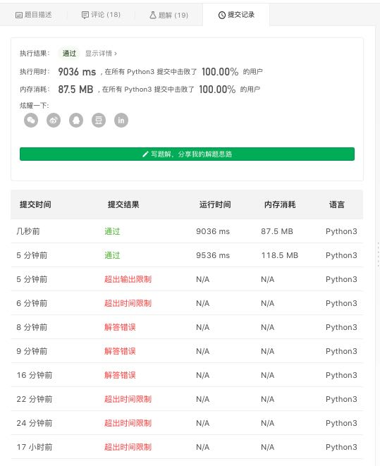

LC 5725. 序列中不同最大公约数的数目
https://leetcode-cn.com/problems/number-of-different-subsequences-gcds/
这题看了前面两个提示才想出来解法，并且还做了好几次修正才是最终写对。
这两个提示分别是：
- Think of how to check if a number x is a gcd of a subsequence.
- If there is such subsequence, then all of it will be divisible by x. Moreover, if you divide each number in the subsequence by x , then the gcd of the resulting numbers will be 1.
所以设计出来的解法是，对每个数进行因数分解，并且将余数放在因数的bucket里面。这些因数就是可能的子序列最大公约数，然后对每个因数进行验证，是否是某个子序列的最大公约数。只需要确认这个bucket里面存在两个数，它们的gcd=1就行。事实上我们也不用去尝试两个数，只需要遍历整个数组。如果其中中间结果gcd=1的话，说明就存在子序列gcd=1.
以 [6,10,3] 为例
- 6 的因数有 1,2,3,6
- 10 的因数有 1,2,5,10
- 3 的因数有 1,3
然后分别将余数放进因数的bucket里面
- 6 的操作有 1->6, 2->3, 3->2, 6->1
- 10 的操作有 1->10, 2->5, 5->2, 10->1
- 3 的操作有 1->3, 3->1
最终的bucket有
- 1 -> [6,10,3]. gcd = 1
- 2 -> [3,5] gcd = 1
- 3 -> [2,1] gcd = 1
- 6 -> [1] gcd = 1
- 5 -> [2] gcd = 2
- 10 -> [1] gcd = 1
所以结果是[1,2,3,6,10].
关于因数数量，我做了个实验。n=2*10^5的话，单测(sqrt(n))素数个数是150，进行因数分解的话，最多的因数数量是160, 这个数是166320。所以对于一个数进行因数分解的话，最多有160个因数。在这个问题里面，操作大约就是160 * 10^5 = 16 * 10^6，所以可能会比较耗时（或者是超时）
N = 200000 def makeprimes(n): p = [0] * (n+1) for i in range(2, n): if i * i > n: break if p[i] == 1: continue for j in range(i, n): if i * j > n: break p[i*j]=1 return [x for x in range(2, n+1) if p[x] == 0] primes = makeprimes(int(N ** 0.5) + 1) print(primes, len(primes)) def factors(x): oldx = x ans = 1 detail = [] for p in primes: if x < p: break if x % p == 0: res = 1 while x % p == 0: x = x // p res += 1 detail.append((p, res)) ans = ans * res if x != 1: ans = ans * 2 return ans, detail, oldx maxf = None for i in range(1, N+1): f = factors(i) if maxf is None or maxf[0] < f[0]: maxf = f print(maxf)
程序输出结果如下
[2, 3, 5, 7, 11, 13, 17, 19, 23, 25, 29, 31, 35, 37, 41, 43, 47, 49, 53, 55, 59, 61, 65, 67, 71, 73, 77, 79, 83, 85, 89, 91, 95, 97, 101, 103, 107, 109, 113, 115, 119, 121, 125, 127, 131, 133, 137, 139, 143, 145, 149, 151, 155, 157, 161, 163, 167, 169, 173, 175, 179, 181, 185, 187, 191, 193, 197, 199, 203, 205, 209, 211, 215, 217, 221, 223, 227, 229, 233, 235, 239, 241, 245, 247, 251, 253, 257, 259, 263, 265, 269, 271, 275, 277, 281, 283, 287, 289, 293, 295, 299, 301, 305, 307, 311, 313, 317, 319, 323, 325, 329, 331, 335, 337, 341, 343, 347, 349, 353, 355, 359, 361, 365, 367, 371, 373, 377, 379, 383, 385, 389, 391, 395, 397, 401, 403, 407, 409, 413, 415, 419, 421, 425, 427, 431, 433, 437, 439, 443, 445] 150
(160, [(2, 5), (3, 4), (5, 2), (7, 2), (11, 2)], 166320)
最终程序代码如下：
- makeprimes 创建素数表，用于做因数分解
- gcd 计算最大公约数
- findfactors 对数字做因数分解得到所有因数
def makeprimes(n): p = [0] * (n + 1) sz = len(p) for i in range(2, sz): if i * i >= sz: break if p[i] == 1: break for j in range(i, sz): if i * j >= sz: break p[i*j]=1 return [x for x in range(2, sz) if p[x] == 0] def gcd(x, y): while y: x, y = y, x % y return x def findfactors(x, primes): factors = [1] for p in primes: if x < p: break if x % p == 0: rep = 0 while x % p == 0: rep += 1 x = x // p b = 1 up = [] for i in range(rep): b = b * p for ft in factors: up.append(b * ft) factors.extend(up) return factors class Solution: def countDifferentSubsequenceGCDs(self, nums: List[int]) -> int: maxn = max(nums) # 只需要查询sqrt(n)一下的素数 primes = makeprimes(int(maxn ** 0.5) + 1) from collections import defaultdict ft = defaultdict(list) for x in nums: factors = findfactors(x, primes) # print(x, factors, x) # 注意这里并不是全部因子，全部因子需要包含x//f # 但是这里可以判断，如果rem <= max(factors)的话 # 那么也没有必要包含进来 # for f in factors: # rem = x // f # ft[f].append(rem) # ft[rem].append(f) maxf = max(factors) for f in factors: rem = x // f ft[f].append(rem) if rem > maxf: ft[rem].append(f) ans = 0 # print(ft) for f, rs in ft.items(): x = rs[0] for y in rs: x = gcd(x, y) if x == 1: break if x == 1: ans += 1 return ans
看上去大家都没有使用python来编写，所以9000ms也能在100%.

UPDATE: 事实证明还有更加简单的做法，就是直接去验证所有的因子（而不是去验证可能的因子），
关于时间复杂度，调和级数 sum{i=1..n}{n/i} 的时间复杂度是O(nlgn)，在加上gcd的时间复杂度是O(lgn), 所以总的时间复杂度是O(n lgn lgn).
def gcd(x, y): while y: x, y = y, x % y return x class Solution: def countDifferentSubsequenceGCDs(self, nums: List[int]) -> int: maxn = max(nums) nums = set(nums) ans = 0 for x in range(1, maxn + 1): if x in nums: # print(x) ans += 1 continue g = None for y in range(x, maxn + 1, x): if y not in nums: continue if g is None: g = y // x else: g = gcd(g, y // x) if g == 1: # print(x) ans += 1 break return ans